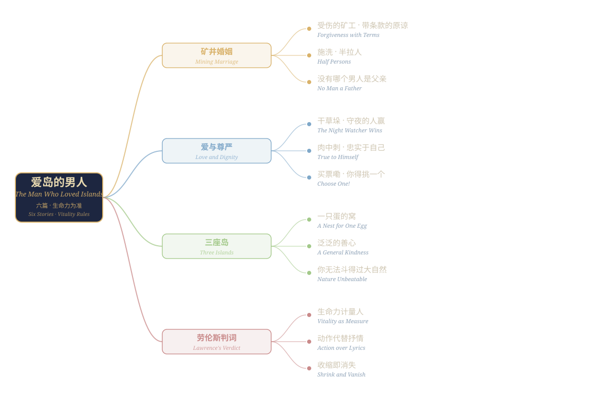

爱岛的男人
〇 · 书籍信息
基本信息
| 书名 | 《爱岛的男人》——人民文学出版社「蜂鸟文丛」劳伦斯作品集，收录《受伤的矿工》《施洗》《干草垛里的爱》《肉中刺》《买票嘞！》《爱岛的男人》六篇，横跨作家早中晚三期 |
|---|---|
| 作者 | D.H.劳伦斯（1885–1930），诺丁汉郡矿工之子——十二年长篇、七十余篇短篇、多部诗集，还办画展：英国现代文学罕见的通才；四十五岁死于肺结核 |
| 译者 | 黑马——劳伦斯译者、研究者，译有《查泰莱夫人的情人》《虹》；本集由他选编翻译，序言自称「文明荒原上爱的牧师」 |
| 体裁 | 矿区婚姻（《受伤的矿工》《施洗》）· 田园换位（《干草垛里的爱》）· 军营逃亡（《肉中刺》）· 战时喜剧（《买票嘞！》）· 寓言式压卷（《爱岛的男人》） |
| 一句话 | 一个想拥有整个世界的男人，一路缩到只剩一块石头——劳伦斯用三座岛证明：切到最后一段关系，命就到了 |
一 · 核心主题总览
六篇短章之下，是四组互相咬合的母题：① 婚姻的账本（谁替谁记账）
《受伤的矿工》里露茜替疯痛的丈夫记了两本账：一本报给社区（不能让他疯名出去丢了补贴），一本记在心里（你不知道你都说了些什么）。劳伦斯写婚姻的高明处在于：和解不是拥抱，是一个擦干眼泪的具体动作。
② 泛泛的善心（爱必须具体）
《爱岛的男人》的社会学内核：想让人人幸福的人最终招人人恨——泛泛的善心是广播，具体的爱是握手；广播放得越大，握手越少。
③ 恐惧与尊严（身体的诚实）
《肉中刺》的巴克曼恐高、失禁、当众受辱，最后「忠实于自己」——劳伦斯的英雄不赢在勇敢，赢在承认：我天生就那样，随它去就行。
④ 生命力的独裁（《施洗》的判词）
「他们从来没有生活过；他的生命和他的意志一直在控制着他们」——强意志的父母是儿女生命力的闸门：这几乎是《儿子与情人》全部主题的短篇预演。
二 · 第一段 矿井之下 · 受伤的矿工—— 疼 · 疯 · 没关系 ——
她不后悔嫁给了他
全册第一句就是一份婚姻的对账单：「他配不上她，大伙儿都这么说。可她不后悔嫁给了他。」矿工威利精力过剩，厨娘露茜白净文静——众人眼里的错配。劳伦斯开篇即把裁判权从「大伙儿」手里夺走：他教她用报纸当桌布、大清早不许白桌布——粗鄙与骄傲同在，可他把挣的钱全部交给她管。
◆ 语言学习 · 英语关键词 · 矿区
| collier / 矿工 | 劳伦斯故乡伊斯特伍德的通用身份——井下上来的男人「一头一脸全是黑，只有眼白还是白的」：颜色即阶层 |
|---|---|
| strike / 罢工 | 1912 年全国煤矿大罢工是本篇的日历——婚姻的账单与阶级的账单同时到期 |
杀死她：疼到失语的婚姻
井下事故压破膀胱，威利疼到疯狂，抓着妻子喊「杀死她」；风头一过可怜巴巴地问：「我说了吗，露茜？」她的回答轻柔但冷淡：「你不知道你都说了些什么。」疯与不疯、罪与罚的分界线，画在了夫妻之间；她还得瞒住街坊——疯名传出去，罢工补贴就停了。
◆ 语言学习 · 叙事 · 双账本
| 疼（pain） | 全篇的发动机——劳伦斯写疼不写伤口，写喊叫的音量：从「疼死了」到「杀死她」，音阶即疯度 |
|---|---|
| 补 贴 | 体面经济学——社区的道德审判最终落在钱包上：这是本篇最冷的一笔 |
没关系，威利：带条款的原谅
三人哭成一团之后，露茜一把抹干泪水：「没关系，威利。只是别再这样了。」前半句免除罪责，后半句重申底线——宽恕与要求，一句之内各占一半。伊瑟（麦勒）这个姓氏后来被劳伦斯用进了《查泰莱夫人的情人》——本篇是他矿区叙事的伏笔库。
◆ 语言学习 · 句式 · 和解
| 没关系 + 只是别再这样 | 有效原谅的完整语法——没有后半句是纵容，没有前半句是威胁 |
|---|---|
| 抹干泪水 | 和解的动词不是「拥抱」是「擦眼泪」：劳伦斯的动作句永远比抒情句诚实 |
三 · 第二段 祈祷与半拉人 · 施洗 · 干草垛—— 退回父亲身份 · 一次静默换位 ——
施洗：没有哪个男人是父亲
老矿工为未婚女儿的私生子请牧师来家施洗，突然自行祈祷，说出全书最惊人的一段话：「没有哪个男人是父亲，主，只有您才是。」他把自己的父亲身份当众退回给上帝，还附了一份清算：「如果不是因为我，他们或许会是阳光下的树木呢。让我担这个罪吧，主，是我跟他们搞了个恶作剧」。
◆ 语言学习 · 修辞 · 祷文体
| 诗篇体 | 这段祈祷几乎逐句仿《圣经·诗篇》——神圣文体装世俗清算：落差即讽刺，也是庄严 |
|---|---|
| 石头下的植物 | 父亲对自己儿女的判词——被压住的生命：全书生命力母题的第一个反例 |
施洗：几个半拉人
结尾的判词冷得像病理报告：「他们从来没有生活过；他的生命和他的意志一直在控制着他们、遏止着他们。他们不过是几个半拉人。」父亲在祈祷里认账，叙事者在结尾盖章——一场圣礼，洗出的是全家的人格病历。
◆ 语言学习 · 概念 · 意志
| 半拉人 | 劳伦斯的人物计量单位——被他人意志接管的人生只算半个：对照《儿子与情人》的保罗 |
|---|---|
| 心力交瘁的主人 | 父亲这艘破船依旧主宰着房子——权力不随体格退休：控制欲是最后的财产 |
干草垛里的爱：守夜的人赢
草垛之夜是一场四人静默换位：被家庭女教师冷落的哥哥乔弗里整夜蹲守草垛，只为替弟弟遮苫布、支梯子；草垛顶上的波拉赌气不下来——「我不想要你」。第二天清晨火堆边一次目光相遇，「乔弗里和丽蒂娅则以心相许了」——爱情的改选不发生在高光时刻，而发生在一方「没人看见时在干什么」的现场。
◆ 语言学习 · 田园 · 换位
| 苫布与梯子 | 守护的具体道具——劳伦斯的爱情从不靠誓言，靠物件：苫布盖上的那一刻已定胜负 |
|---|---|
| 则以心相许了 | 文言化的收束句——叙述者跳出来盖章：田园爱情的裁判权在叙述者手里 |
四 · 第三段 耻辱与自由 · 肉中刺 · 买票嘞！—— 认账 · 反抗 · 离场 ——
肉中刺：我天生就那样
士兵巴克曼恐高，爬工事演习吓到失禁，当众受辱；激愤中失手把军官打翻进河，逃亡途中在一个女仆身上找回做男人的完整，最后平静地等宪兵来抓。他的自我和解条款：「我什么样儿就什么样儿，随它去就行。」叙事者的盖章是：「他忠实于自己」——承认短板是止损，否认短板是复利。
◆ 语言学习 · 心理 · 三栏账
| 恐惧（生理事实） | 不可谈判的那一栏——劳伦斯把勇敢与恐惧分开记账：敢承认的人反而完整 |
|---|---|
| 耻辱（社会评价） | 可以清算的一栏——「公开了。他必须继续」：耻辱一被看见，威力减半 |
肉中刺：他现在完蛋了
男爵抓人后对艾米莉撂下判词：「他现在完蛋了。」可这判词落在已经忠实于自己的人身上成了空炮——被抓走的巴克曼木然走着「似乎他身在别处」；小说停在男爵气呼呼的「简直就是个傻瓜」上：体制赢了程序，个人赢了存在。
◆ 语言学习 · 权力 · 语言学
| 完蛋了 | 军队账本的结算用语——程序性失败与存在性破产是两回事 |
|---|---|
| 幽暗的纯净目光 | 艾米莉的结尾定格——被权力审判过的眼睛反而更干净：劳伦斯给爱情发的勋章 |
买票嘞！：你得挑一个
战时电车上，情场浪子约翰·托马斯被七位女售票员围在休息室里收拾了一顿，最后通牒：「你得挑一个！」他认怂报出安妮的名字；安妮退开一步苦涩地说：「我不要他，他还是再挑一次吧。」——赢了规矩就离场：全篇的题眼是真正受伤的人是主导者本人。休息室里「没谁！」的齐声回答之后，每个人都在等他看自己一眼——劳伦斯把群像写成了人性实验室。
◆ 语言学习 · 喜剧 · 私刑
| 科迪 | 约翰·托马斯的绰号——被叫小名的瞬间即失去主导权：称呼即权力 |
|---|---|
| 你罪有应得啊 | 审判的口头禅——集体的规矩比个体的眼泪有效，但动完手记得走 |
五 · 第四段 三座岛 · 爱岛的男人—— 一只蛋 · 泛泛之善 · 大雪 ——
第一座岛：一只蛋的窝
压卷篇的起点是一份极端个人主义宣言：他要一座完全属于自己的岛屿——「并非是要独处岛上，而是让它成为自己的一个世界」。劳伦斯随即给出全书最漂亮的比喻：「一座岛屿是一个窝，它只拥抱一只蛋，就一只。这只蛋就是这位岛民」——拥有九十九年租借权的世界之主，自此开始为「主人」身份付利息：管家骗他、农工阳奉阴违、匿名信与「埃及的瘦母牛」——五年亏空，转手给旅店公司做蜜月岛兼高尔夫球场。
◆ 语言学习 · 英语关键词 · 岛
| leasehold / 租借权 | 九十九年——「永久拥有」的幻觉：人可以租下岛屿，租不下人心 |
|---|---|
| Master / 主人 | 岛上所有人对他的称呼——尊称是隔离墙：被叫主人的人失去被爱的资格 |
泛泛的善心：它理应得此下场
岛民想让人人幸福，劳伦斯替他总结两条铁律：想让世界完美，就不能真爱什么——只能备一颗泛泛的善心；而这颗泛泛的善心「总是被其施爱的对象视作侮辱，从而导致一种特殊的恶意。当然了，泛泛的善心是利己的，它理应得此下场！」——广播式的爱不指向任何具体的人，就等于把所有人排除在真正的爱之外。
◆ 语言学习 · 伦理 · 具体性
| 泛泛的善心 | 成本最低的形象工程——不被具体对象检验过的善，大多是利己的化妆 |
|---|---|
| 恶毒的岛屿 | 「一只看不见的手默默地伸出来」——群体对泛泛之善的利息：母牛坠崖、猪病、匿名信 |
第三座岛：你无法斗得过大自然
第二座岛（避难所＋弗劳拉的无意识之爱）之后是第三座岛：只剩羊、猫和海鸟的泥炭地。他喜欢「空前绝后的寂静」，见人就想躲，甚至「扯下了煤油灯上的铜标签，不让他的小屋里有任何一点文字的东西」。结尾大雪封岛，他在高烧里反复念诵：「你无法斗得过大自然！」——三次失败层层剥皮：第一座岛败给社会，第二座败给爱欲，第三座败给自然；彻底的独立等于彻底的消失。
◆ 语言学习 · 寓言 · 收缩
| 三段式收缩 | 世界→避难所→石头——劳伦斯的空间叙事：每缩一级，人性掉一格 |
|---|---|
| 黄鸟 | 唯一的访客——来自远方寒冷海域、羽毛如珍珠的神秘之鸟：自然对最后一人的一次免检致意 |
句型 ｜ 「到夏天了，树该绿了。」他痴痴地俯瞰着这座令他陌生的岛屿——高烧的幻觉里仍想着树：劳伦斯的结尾永远给生命力留最后一根火柴，哪怕火柴注定划不着。
六 · 人物图鉴与成长弧线—— 主角配角 · 一张表看穿 ——
主要人物
岛民（爱岛的男人）——无名的主人——租下九十九年的世界之主：从「主人」到「卡斯卡特先生」到无名者，三次降格
露茜（受伤的矿工）——厨娘出身的矿工妻子——两本账的记账人：替社区瞒、替自己记，宽恕带条款
老矿工（施洗）——运动失调症摧垮的家长——用一段诗篇体祷文当众退回父亲身份并自我清算
巴克曼（肉中刺）——恐高的士兵——「忠实于自己」的赢家：体制赢了程序，他赢了存在
安妮（买票嘞！）——电车女售票员——私刑的主导者与最受伤的人：赢了规矩就离场
次要人物（功能位）
| 威利 | 受伤的矿工——「杀死她」三个字的制造者，也是「我说了吗」的失忆者 |
|---|---|
| 乔弗里与莫里斯 | 干草垛兄弟——守夜的人赢过炫耀的人：劳伦斯式爱情裁判 |
| 艾米莉 | 男爵家的女仆——「幽暗的纯净目光」：权力语言失效的证据 |
| 约翰·托马斯 | 查票员浪子——「科迪」：被集体清算的轻佻 |
| 弗劳拉 | 第二座岛上的寡妇之女——「无意识的性」的执行者：意志冒充欲望的标本 |
七 · 主题与象征—— 每个道具都在说话 ——
| 岛 | 自我的实验皿——九十九年租借权买不来的东西：关系 |
|---|---|
| 蛋 | 窝里的唯一住客——绝对自足的哲学终将孵出虚无 |
| 煤与井下 | 劳伦斯的颜色系统——「一头一脸全是黑，只有眼白还是白的」：黑是劳动，白是尊严 |
| 雪 | 第三座岛的终审法官——温柔、无声、不可谈判：自然的判决书 |
| 苫布 | 守夜者的道具——没人看见的守护才是人格的试纸 |
| 电话线般的电车 | 《买票嘞！》的移动实验室——战时英国的性别权力暂借给了女售票员 |
八 · 写作手法赏析—— 怎么写，就能怎么学 ——
① 三段式收缩结构
《爱岛的男人》世界→避难所→石头的收缩法——每一座岛都是上一座的减号：寓言通过空间递减完成论证。
② 动作代替抒情
和解是「一把抹干泪水」，爱意是「把脸深深埋在盘子里」——劳伦斯的句子永远先给动作再给判断。
③ 群像实验室
《买票嘞！》七个人共用一个受害者——把一场私刑写成社会心理学实验：谁先笑、谁不肯笑，即立场。
④ 圣文体的挪用
《施洗》用《诗篇》体做家庭清算——神圣语法装世俗内容，落差既产生讽刺也产生庄严。
九 · 名段欣赏—— 原文精读 · 逐段赏析 ——
十 · 金句摘录—— 12 条 · 中英对照 · 带出处 ——
"他配不上她，大伙儿都这么说。可她不后悔嫁给了他。"—— 受伤的矿工 · 开篇
"没有哪个男人是父亲，主，只有您才是。"—— 施洗 · 父亲的祈祷
"他们从来没有生活过；他的生命和他的意志一直在控制着他们、遏止着他们。他们不过是几个半拉人。"—— 施洗 · 结尾
"我不想要你。"—— 干草垛里的爱 · 波拉
"乔弗里和丽蒂娅则以心相许了。"—— 干草垛里的爱 · 结尾
"我什么样儿就什么样儿，随它去就行。"—— 肉中刺 · 巴克曼
"他忠实于自己。"—— 肉中刺
"你得挑一个！"—— 买票嘞！
"他出生在一座岛屿上，可这座岛令他感到不适，因为这岛上除了他自己，还有不少别人。他要的是一座完全属于自己的岛屿：并非是要独处岛上，而是让它成为自己的一个世界。"—— 爱岛的男人 · 开篇
"不，一座岛屿是一个窝，它只拥抱一只蛋，就一只。这只蛋就是这位岛民。"—— 爱岛的男人
"天啊，不幸的是，一颗泛泛的善心总是被其施爱的对象视作侮辱，从而导致一种特殊的恶意。当然了，泛泛的善心是利己的，它理应得此下场！"—— 爱岛的男人
"印刷物和印刷的字体是那么像腐朽的话语，看上去十分淫秽。他扯下了煤油灯上的铜标签，不让他的小屋里有任何一点文字的东西。"—— 爱岛的男人 · 第三座岛
十一 · 拓展阅读—— 原文 · 词条 · 译文 ——
原文与文本
- D. H. Lawrence — Wikipedia —— 生平、禁书史与「生命力哲学」的谱系
- The Man Who Loved Islands — Wikipedia —— 1927 年压卷篇原文与三座岛结构研究
主题与延伸
- Sons and Lovers — Wikipedia —— 《儿子与情人》——「半拉人」母题的长篇展开
- Trümmerliteratur — Wikipedia —— 对照阅读：同期德国废墟文学的「零度写作」
十二 · 个人感悟与心得—— 三点心得 ——
矿灯 · 干草垛 · 三座岛
① 守夜的人赢过炫耀的人
《干草垛里的爱》的换位不是情节反转是价值排序：把爱用在没人看见的地方的人，最后被爱选中。检查自己最近一周「没人看见时在干什么」——那是你真实的人格余额。
② 泛泛的善心是利己的化妆
岛民五年败光一座岛，败因不是管理是爱法：广播式的善不指向具体的人，就等于把所有人排除在外。善良要有收件人。
③ 彻底的独立等于彻底的消失
三座岛层层收缩，收缩的终点是大雪。劳伦斯的判决书写给每一个「想逃离所有人」的时刻：对清净的渴望要有刻度——超过某个浓度，寂静不再是滋养，是失温。
—— 劳伦斯死于 1930 年 3 月 2 日，法国旺斯。讣告上写：「他是我们这一代最伟大的富有想象力的小说家之一。」而他自己留下的遗言更简单：要忠实于自己。
十三 · 一页速查（复习用）
| 全书骨架 | 六篇三线：矿井婚姻（受伤的矿工·施洗）· 田园与军营（干草垛·肉中刺·买票嘞！）· 压卷寓言（爱岛的男人） |
|---|---|
| 核心命题 | 生命力的独裁；泛泛的善心是利己的；彻底的独立等于彻底的消失 |
| 必读篇目 | 受伤的矿工 → 施洗 → 肉中刺 → 爱岛的男人（四篇即能拼出完整劳伦斯） |
| 三大符号 | 煤与白眼白（劳动与尊严）· 蛋（绝对自足）· 雪（自然的终审） |
| 一句话总结 | 人不是靠道德标签活的——人是靠生命力剩多少活的 |
十四 · 全书思维导图—— 一图纵览 ——

一图纵览全书骨架 · 中英双语对照 · 手机端可左右滑动查看全图